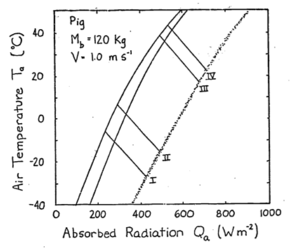
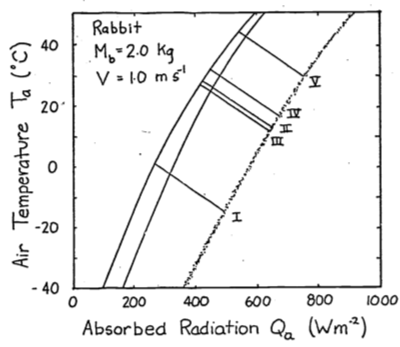
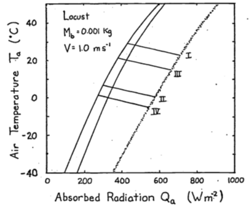
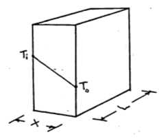
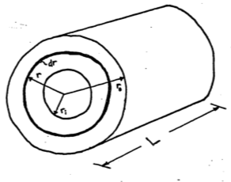
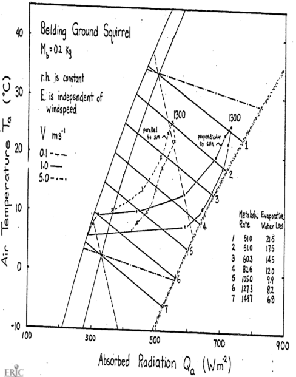

9.8 PROBLEM SOLUTIONS
Equation (9.10) is \[M-E_{ex}=\frac{k_b}{d_b}(T_b-T_s)\] Equation (9.11) is \[M-E_{ex}-E_{sw}=\frac{k_f}{d_f}(T_s-T_r)\] \(k_b = 0.205Wm^{-1}°C^{-1}\) and \(k_f = 0.025Wm^{-1}°C^{-1}\). From this information maximum and minimum values of (\(T_b - T_s\)) and (\(T_s - T_r\)) can be calculated. These are tabulated below. The results are plotted on the two figures (Porter and Gates 1969, Figures 5 and 6, p. 231).
| (\(T_s-T_r\)) | (\(T_b-T_s\)) | |||
|---|---|---|---|---|
| Maximum | Minimum | Maximum | Minimum | |
| Shrew | 41.3 | 6 | 1.7 | 0.6 |
| Cow, summer | 18.8 | 7.4 | 6.8 | 6.5 |
| Cow, winter | 101.0 | 39.8 | 6.8 | 6.5 |
| Pig | 14.7 | 1.0 | 21.0 | 0.1 |
| Zebra finch | 26.6 | 0 | 0.9 | 0 |
| Locust | – | – | 2.9 | 0 |
| Cardinal | 61.7 | 0 | 1.0 | 0 |
| Jack rabbit | 40.8 | 0 | 0.7 | 0 |
| Fence lizard | – | – | 0.5 | 0 |
| Ranking | Total \(\Delta T\) | Ranking | ||
|---|---|---|---|---|
| Maximum \(T_b-T_r\) | Maximum | Minimum | Minimum \(T_b-T_r\) | |
| Shrew | 3 | 435 | 7.5 | 5 |
| Cow, summer | 6 | 25.6 | 13.9 | 6 |
| Cow, winter | 1 | 107.8 | 46.3 | 7 |
| Pig | 5 | 35.7 | 1.1 | 4 |
| Zebra finch | 7 | 27.5 | 0 | |
| Cardinal | 2 | 62.7 | 0 | |
| Jack rabbit | 4 | 41.5 | 0 |
If the environment is cold the animal will have to make this difference large to maintain \(T_b\). It is also possible that the surface temperature will be hotter than the body temperature. Fleece on sheep can protect them from getting too hot (Hatheway 1977). Making the difference small decreases the rate of heat transfer within the body.
Many marine mammals have thick layers of fat. Fat is an economical way to store energy as well as provide insulation. It allows the animal to smooth out its form which should teduce the friction losses due to drag when swimming. Some marine mammals are covered with fur. These animals all spend time in terrestrial habitats (seals, sea lions, otter), which seems to indicate that fur is an important adaptation on land. The fur can also provide a boundary layer of air in the water which helps to cut down on heat loss. The relative efficiency of fat to air as insulation material can be computed by comparing the ratio of the conductivities. From the text we have \[\frac{k_b}{k_f}=\frac{0.205}{0.025}=8.2\] The conductivity of fat is 8.2 times greater than that of air. Therefore, to receive the same resistance to heat flow, an animal would have to have 8.2 times the thickness of fat. The lizard can only maintain a maximum 0.5 °C difference between its skin and body temperature.
- The first step is to calculate \(T_r\) using Equation (9.13). This yields:
\[T_r°C\]
| I | II | III | IV | V | |
|---|---|---|---|---|---|
| Pig | 0.30 | 5.9 | 37.6 | 41.8 | |
| Jack rabbit | -4.0 | 18.7 | 27.5 | 32.3 | 43.7 |
| Locust | 39.1 | 20.0 | 20.0 | 1.0 |
\[\varepsilon\omega T_r^4 \mbox{ values } (\varepsilon = 0.96)\]
| I | II | III | IV | V | |
|---|---|---|---|---|---|
| Pig | 304.6 | 378.0 | 507.6 | 535.6 | |
| Jack rabbit | 285.9 | 394.9 | 444.7 | 473.8 | 548.6 |
| Locust | 517.8 | 402.0 | 402.0 | 307.5 |
| Pig | Jack rabbit | Locust | |
|---|---|---|---|
| \(h_c\), convection coefficient | 9.12 | 15.72 | 43.21 |
| \(M_b\), mass | 120 kg | 2 kg | 0.001 kg |
\(h_c = 17.24V^{0.6}{M_b^{-0.133}}\) \(V =1.0ms^{-1}\)
\(h_c\) will be the slope of the line so all we need to do is find one pair (\(Q_a\), \(T_a\)) for each set of conditions given in Table B such that
\[Q_a + M = \varepsilon\omega T_r^4+E_{sw}+E_{ex}+h_c(T_r-T_a)\] Assume \(T_a=T_r\) in each case so that the convection is zero. Therefore \[Q_a=\varepsilon\omega T_r^4+E_{sw}+E_{ex}-M\]
\[Q_a \mbox{ values}\]
| I | II | III | IV | V | |
|---|---|---|---|---|---|
| Pig | 183 | 300 | 512 | 560 | |
| Jack rabbit | 218 | 559 | 414 | 449 | 549 |
| Locust | -68 | -184 | 402 | 307.5 |



- The conduction term is
\[G=\frac{k}{x}(T_r-T_g)\]
where \(k\) is the conductivity (W m-2°C-1),
\(T_r\) is the surface temperature(°C),
\(T_g\) is the ground temperature(°C),
and \(x\) is the thickness of the layer (\(m\))
The energy balance is \[Q_a + M = \varepsilon\omega T_r^4 + E_{sw} + E_{ex} + h_c(T_r - T_a) + k(T_r - T_g)\] If \(T_r > T_g\), \(G\) is positive and the animal will receive more energy. This will shift the climate space to the right. If \(T_g > T_r\), the opposite shift will occur.
Combinations of low air temperature and high radiation do not occur naturally. The coldest air temperatures will occur at night. By similar reasoning the area labeled B in Figure 9.6 suggests that the highest air temperatures will occur under low radiation levels. Again, this will not be true. Figure 9.3 of the text shows that this is the case. Other data presented in the Morhardt and Gates paper confirm these observations. The reason is simply that the sun heats the air.
The two formulae needed to calculate the convection coefficients are 6 and 7. \[h_{c1}=0.927V^{0.33}D^{-0.67}\;\;\;\;\;\;\;\mbox{ Porter and Gates}\] \[h_{c2}=17.24V^{0.60}M_b^{-0.133}\;\;\;\;\;\;\;\mbox{ Mitchell}\]
| \(h_{c1}\) | \(h_{c2}\) | \(h_{c2}/h_{c1}\) | |
|---|---|---|---|
| Sheep | 1.712 | 9.78 | 5.7 |
| Cardinal | 6.90 | 29.04 | 4.2 |
| Lizard | 16.67 | 25.70 | 1.54 |
| Shrew | 14.76 | 31.85 | 2.2 |
Mitchell’s \(h_c\)
| 0.00001 | 0.001 | 0.1 | 1.01 | 10.0 | 160.0 | \(M_b\) | ||
|---|---|---|---|---|---|---|---|---|
| \(V\) | \(V^{0.33}\) | 4.640 | 2.511 | 1.359 | 1.0 | 0.736 | 0.398 | \(M_b^{-0.1333}\) |
| 0.1 | 0.251 | 20.08 | 10.86 | 5.88 | 4.32 | 3.18 | 1.72 | |
| 0.5 | 0.660 | 52.80 | 28.57 | 15.46 | 11.38 | 8.37 | 4.53 | |
| 1.0 | 1.0 | 79.99 | 43.30 | 23.43 | 17.24 | 12.69 | 6.66 | |
| 3.0 | 1.933 | 154.63 | 83.68 | 46.29 | 33.32 | 24.53 | 13.26 | |
| 10.0 | 3.981 | 318.45 | 172.34 | 93.27 | 68.63 | 50.51 | 27.32 |
Porter and Gates’ \(h_c\)
| 0.00001 | 0.001 | 0.1 | 1.01 | 10.0 | 160.0 | \(M_b\) | ||
|---|---|---|---|---|---|---|---|---|
| 0.0022 | 0.01 | 0.0464 | 0.10 | 0.215 | 1.00 | \(D\) | ||
| \(V\) | \(V^{0.333}\) | 59.95 | 21.54 | 7.743 | 4.641 | 2.783 | 1.00 | \(D^{-0.667}\) |
| 0.1 | 0.464 | 25.80 | 9.27 | 3.33 | 2.00 | 1.20 | 0.43 | |
| 0.5 | 0.794 | 44.14 | 15.86 | 5.76 | 3.42 | 2.05 | 0.74 | |
| 1.0 | 1.0 | 55.60 | 19.97 | 7.18 | 4.30 | 2.58 | 0.92 | |
| 3.0 | 1.442 | 80.17 | 28.80 | 10.35 | 6.20 | 3.72 | 1.33 | |
| 10.0 | 2.154 | 119.75 | 43.03 | 15.47 | 9.27 | 5.56 | 1.99 |
Let \(D=L=(\frac{M_b}{\rho})^{1/3}\) from Appendix II, \(\rho = 1 \times 10^3 kg\;m^{-3}\) then \[\frac{h_{c2}}{h_{c1}}=\frac{17.24V^{0.60}M_b^{-0.133}}{0.927V^{0.3}[(\frac{M_b}{\rho})^{1/3}]^{-2/3}}=4.01V^{0.27}M_b^{0.089}\]
Ratio of \(hc_2/hc_1\)
| \(V\) m s-1 \(M_b\) kg | 0.0001 | 0.001 | 0.1 | 1.0 | 10.0 | 1000 |
|---|---|---|---|---|---|---|
| 0.1 | 0.801 | 1.17 | 1.77 | 2.16 | 2.65 | 4.00 |
| 0.5 | 1.20 | 1.80 | 2.71 | 3.33 | 4.08 | 6.12 |
| 1.0 | 1.41 | 2.17 | 3.26 | 4.04 | 4.92 | 7.46 |
| 3.0 | 1.93 | 2.91 | 4.38 | 5.37 | 6.59 | 9.97 |
| 10.0 | 2.66 | 4.01 | 6.03 | 7.40 | 9.08 | 13.75 |
- The heat flow by conduction is \[\begin{equation} q=-kA\frac{dT}{dx} \tag{9.15} \end{equation}\]
where \(q\) is heat flow (W)
\(k\) is the thermal conductivity (W m °C-1)
\(A\) is the area perpendicular to the heat flow (m2)
and \(\frac{dT}{dx}\) is the temperature gradient (°C m-1).
For a slab under steady state conditions we can separate variables and integrate equation (9.15).

\[dT=\frac{q_s}{kA}dx\] \[\int^{T_0}_{T_i}dt=-\frac{q_s}{kA}\int^x_0dx\] \[T_0-T_i=-\frac{q_s}{kA}x\] \[\begin{equation} q_s=\frac{kA}{x}(T_i-T_0) \tag{9.16} \end{equation}\]
For a cylinder we have

\[\begin{align} q_c &= -kA\frac{dT}{dr} \notag \\ A &= 2\pi rL \notag \\ q_c &= -k 2\pi rL \frac{dT}{dr} \notag \\ dT &= -\frac{q_c}{2\pi Lk}\frac{dr}{r} \notag \\ \int^{T_0}_{T_i}dT &= -\frac{q_c}{2\pi Lk}\int^{r_0}_{r_i}\frac{dr}{r} \notag \\ T_0 - T_i &= \frac{-q}{2\pi Lk}ln(\frac{r_0}{r_i}) \notag \\ q_c &= \frac{2\pi Lk}{ln(\frac{r_0}{r_1})}(T_i-T_0) \tag{9.17} \end{align}\]
Now if we assume the area of the slab is equal to \(L\times2\pi\frac{r_i+r_0}{2}\) and the thickness to be \(r_0-r_i\) we can set the two equations (9.16) and (9.17) equal.
\[\frac{kL2\pi\frac{r_i+r_0}{2}(T_i-T_0)}{r_0-r_i}\stackrel{?}{=}\frac{2\pi Lk(T_i-T_0)}{ln(\frac{r_0}{r_i})}\]
Cancelling terms, we have \[ln(\frac{r_0}{r_i})\stackrel{?}{=}\frac{2(r_0-r_i)}{r_i+r_0}\] Therefore \(q_s\) will equal \(q_c\) if the above relationship is true. Using the data given in the problem we can compute the relative radii.
| Outside Radius (cm) | Radius to Skin (cm) | Radius to Fat Layer (cm) | |
|---|---|---|---|
| Desert iguana | 0.75 | 0.75 | 0.65 |
| Shrew | 0.90 | 0.60 | 0.50 |
| Zebra Finch | 1.25 | 0.90 | 0.80 |
| Cardinal | 2.5 | 1.5 | 1.3 |
| Sheep | 25.8 | 12.5 | 11.85 |
| Sheep | 20.7 | 12.5 | 11.85 |
| Pig | 18.0 | 17.7 | 14.2 |
| Jack Rabbit | 5 | 3.5 | 3.3 |
Checking these values we find that for the sheep when \(r_0=25.8\) and \(r_i=12.5\) then \[\frac{2(r_0-r_i)}{r_0+r_i}=0.668\] and \[ln(\frac{r_0}{r_i})=0.724\] This is the worst case for the data which is less than a 10% difference. You can check the error by plotting \[\frac{ln(\frac{r_0}{r_i})-\frac{2(r_0-r_i)}{r_0+r_i}}{\frac{2(r_0-r_i)}{r_0+r_i}} \;\;\mbox{vs.} \;\;\frac{r_0}{r_i}\] The intuitive reason this works is that there is not much change in area for the different pairs of radii we have examined. It is, however, possible to show that
\[\begin{equation} ln(x)=2[\frac{x-1}{x+1}+\frac{1}{3}(\frac{x-1}{x+1})^3+\frac{1}{5}(\frac{x-1}{x+1})^5+...] \tag{9.18} \end{equation}\]
This is done by adding the series expansion for \(-ln(1-y)\) and \(ln(1+y)\) and then letting \(y=\frac{x-1}{x+1}\). The result will give equation(9.18). Using only the first term of expansion in equation (9.18) with \(x=\frac{r_0}{r_i}\) we get \[ln(\frac{r_0}{r_i}) \frac{2(r_0-r_i)}{r_0+r_i}\]
- On the figures the authors give equations to relate metabolic rate and evaporative water loss. These are
\(\begin{aligned} &\left. \begin{array}{l} M=0.2470-0.0064T_E, \;M(cal\;cm^2\;min^{-1}) \\ M=172-4.47T_E, \;M(W\;m^{-2}) \end{array} \right\} 5 < T_E < 27 °C \\ &\;M=51\;W\;m^{-2} \;\;\;\;27 < T_E < 35 °C \\ &\;E=0.00808e^{0.03771T_E},\;E(cal\;cm^{-2}\;min^{-1}) \\ &\;E=5.64e^{0.03771T_E},\;E(W\;m^{-2}) \\ \end{aligned}\)
| \(T_E\) | 5 | 10 | 15 | 20 | 25 | 30 | 35 |
|---|---|---|---|---|---|---|---|
| \(E\) | 6.8 | 8.2 | 9.9 | 12.0 | 14.5 | 17.5 | 21.1 |
| \(M\) | 149.7 | 127.3 | 105.0 | 82.6 | 60.3 | 51 | 51 |
Assume an animal weight of 200 mg which = 0.2kg.
\[\begin{align*} h_c &= 17.24V^{0.6}M_b^{-0.1333} \\ h_c &= 5.36,\;\;21.36,\;\;56.1 \\ V &= 0.01,\;\;1.0,\;\;5.0\;\;ms^{-1} \end{align*}\]
The resulting climate space diagram is given on page 48.
If the animal were simply resting outside, to reduce its metabolism to the lowest levels. it should be active from 1100 to 1500 hours. The reason to go above ground, however, is for activity. Therefore, if metabolic rate increases 1.5 times, preferred activity times should shift to 800-1000 or 1500-1600 hours. It is hard to say much about water loss when the animal is active. According to the figure, if \(M\) increases to \(82 W m^{-2}\) then \(E\) drops. But if respiration rate increases with activity then \(E\) may also increase. Morhardt and Gates considered a wide variety of above-ground habitats. A shaded environment gave much lower radiation loads during the day. If the animal orients its body parallel to the sun, this lowers \(Q_a\) also. A great deal more could have been said about the thermoregulation strategies if the thermal environment of the burrows were monitored and if microhabitat usage and body temperature as a function of time of day had been recorded. One would predict that shaded environments including the burrow would be used more in the middle of the day. To test this, one would have to make hourly observations on microhabitat usage.
